[Java] 33. オープンライブラリを参照する方法(eclipseからmavenを連結)
こんにちは。明月です。
この投稿はJavaのオープンライブラリを参照する方法(eclipseからmavenを連結)に関する説明です。
我々がプロジェクトを構成してプログラムを作成する時、すべてのアルゴリズムと構造体、parsingして変換する関数などのすべてのプログラムソースを作成しながらプログラムを作成することはできません。なぜならそうなら検証する領域も増えるし、作業ステップが多くなるからです。
それじゃなくてもネットから検証してないソースを使うこともリスクがあります。
例えば、プロジェクト内部でJsonタイプの構造体を使います。
Stringタイプになっているjsonデータをクラスに変換することやクラスタイプにあるデータをStringタイプのjsonデータに変換しようと思えばJava標準ライブラリでは変換クラスや関数がないので変換関数を作成しなければならないです。
作ったと思っても様々なケースを予想してテストや検証をしなければならないです。つまり、我々がやろうと思ったプロジェクトがあるのにその付属関数を作ることで時間がたくさんかかることになります。
それでApacheではよく使うソースなどをライブラリを公開しますが、それをオープンライブラリだといいます。
このオープンライブラリはmavenというプログラムとmaven repositoryを通ってオープンライブラリを簡単に検索してプロジェクトに自動に依存性チェックまでして連結することができます。
(依存性チェックとはAライブラリを参照します。でもAライブラリを使うためにはBとCのライブラリが必要です。それならmavenではAというプロジェクトだけ連結すれば自動にBとCライブラリまでダウンロードして連結する機能ということです。)
私もmavenの詳細な仕様はわからないですが、簡単にオープンライブラリを連結して使えるプログラムだということまで知っています。
他の言語ではC#のNugetがあるしPHPはcomposer、pythonにはpipがあります。
それならmavenをインストールしてeclipseに連結して使いましょう。(私はJavaを使う時によく使うツールはeclipseです。)
link - https://maven.apache.org
サイトでzipファイルをダウンロードしましょう。
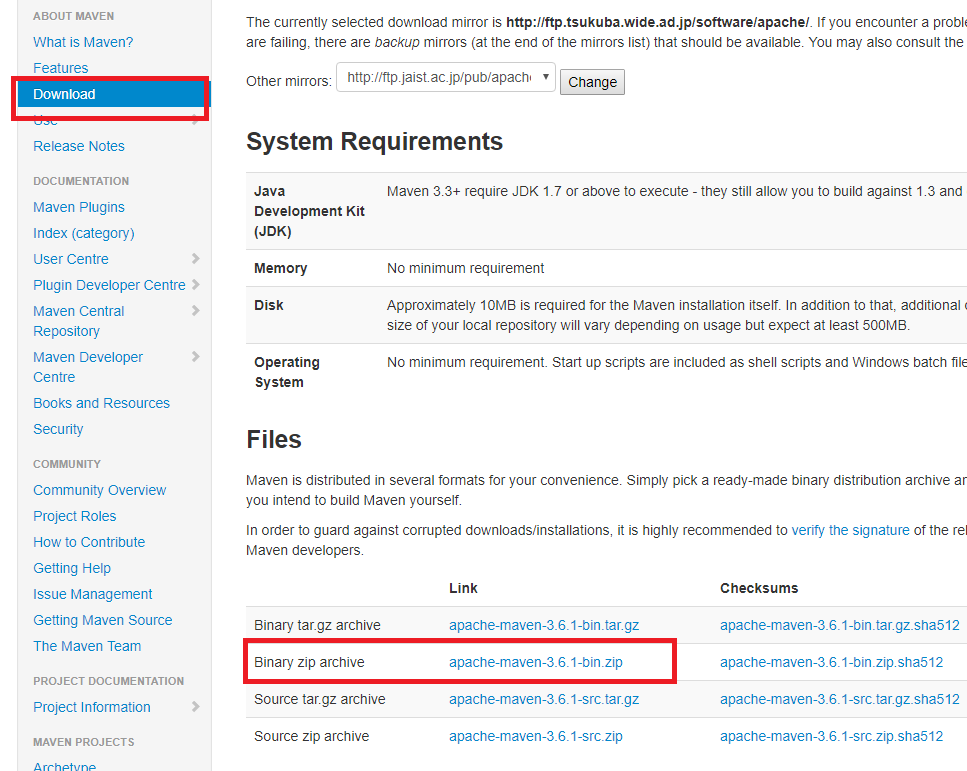
そして適当なところで圧縮を解凍します。
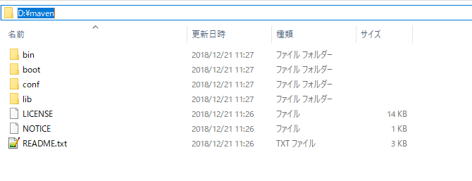
そして「cmd」で当該なフォルダに行って「bin」フォルダで「mvc -version」を確認します。
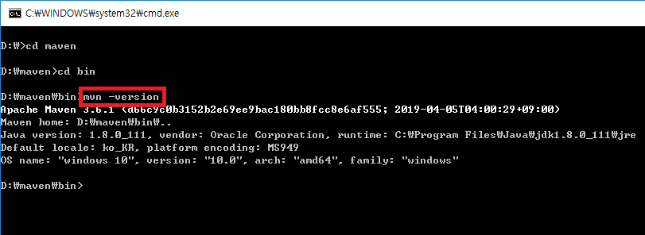
その後で環境変数の設定をしましょう。Window key + Pause breakを押下するかドライブの属性を選択します。
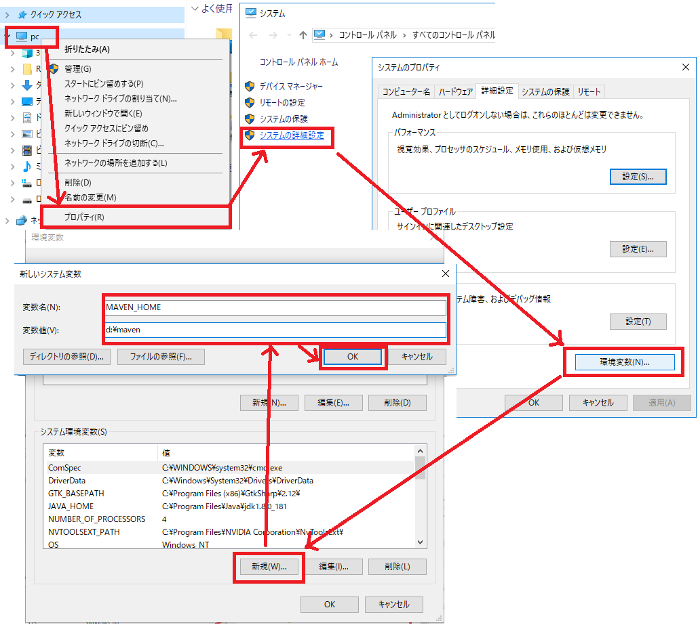
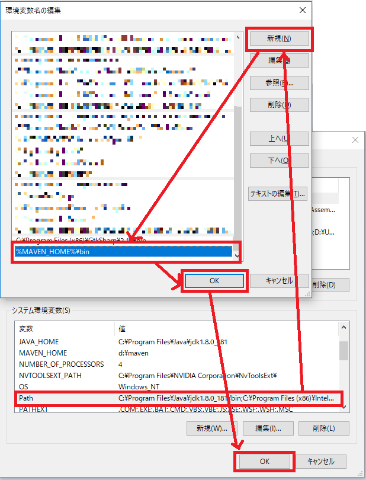
環境設定を設定した後、「cmd」に行ってもう一回に確認します。
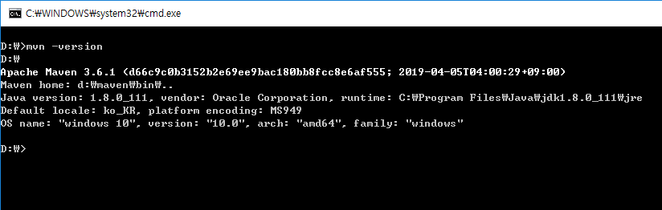
maven設定は完了しました。
mavenを「eclipse」に設定します。「eclipse」の「Preferences」タブに移動します。
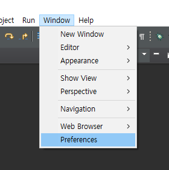
そして「maven」をインストールしたフォルダを設定します。
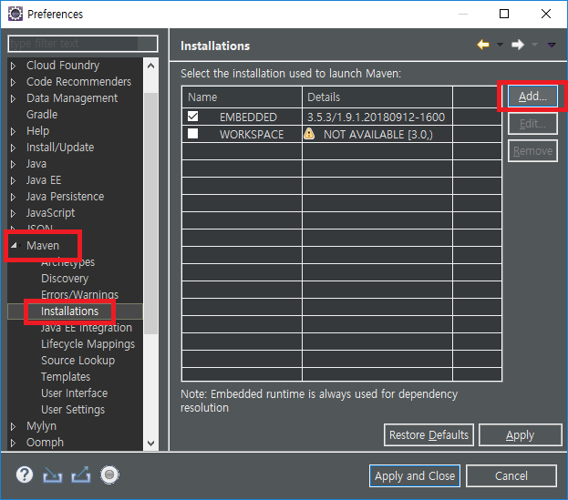
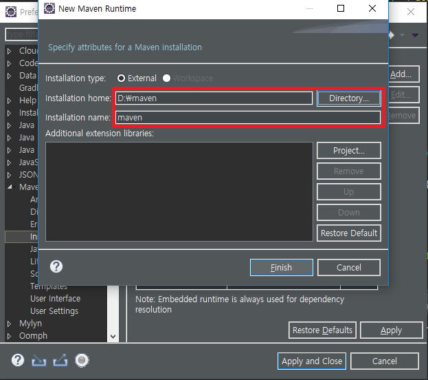
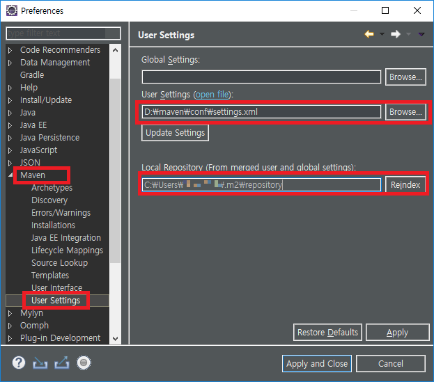
これから「eclipse」で「maven」プロジェクトを生成します。
先は一般プロジェクトで生成しますね。
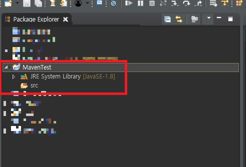
「maven」プロジェクトに変換します。
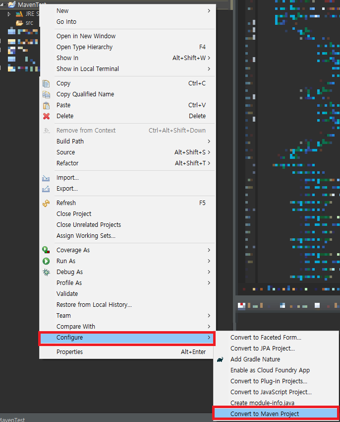
そうしたら「pom.xml」が生成されます。「maven」のテストのため、「gson」を追加します。
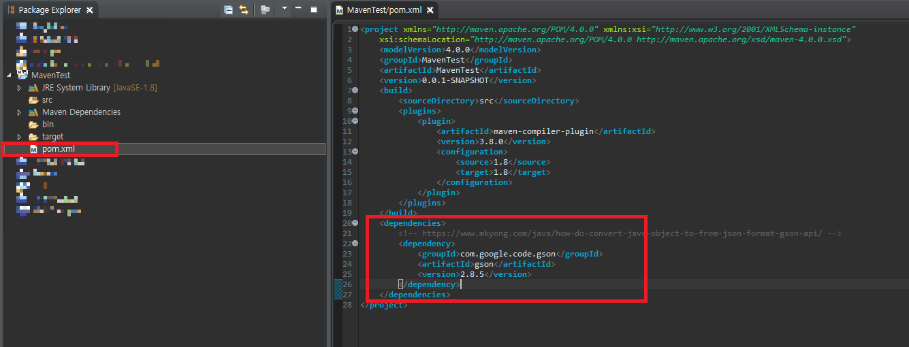
<dependencies>
<!-- https://mvnrepository.com/artifact/com.google.code.gson/gson -->
<dependency>
<groupId>com.google.code.gson</groupId>
<artifactId>gson</artifactId>
<version>2.8.5</version>
</dependency>
</dependencies>
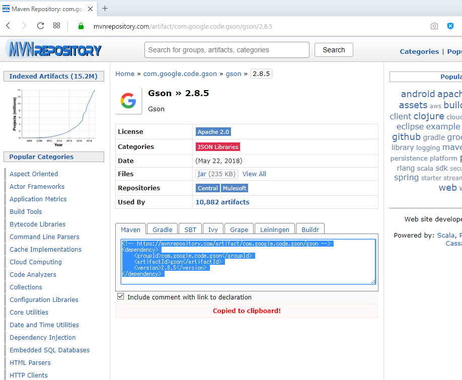
pom.xmlを作成してライブラリをアップデータします。
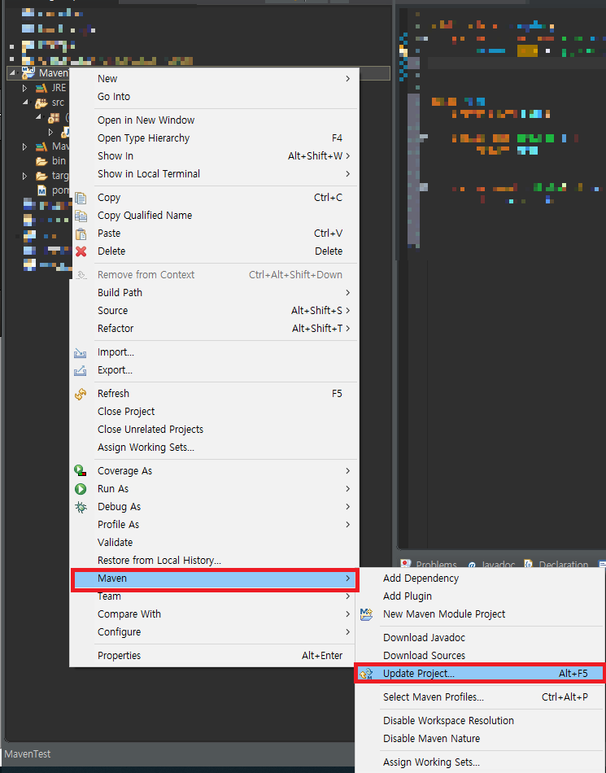
テストのため、ソースを作成しましょう。
import com.google.gson.Gson;
// 実行クラス
public class Example {
// 実行関数
public static void main(String[] args) {
// jsonタイプのstring値
String test = "{\"data\":1}";
// Gsonインスタンス生成
Gson gson = new Gson();
// stringをNodeインスタンスに変換
Node node = gson.fromJson(test, Node.class);
// コンソール出力
System.out.println(node.getData());
}
}
// テストクラス
class Node {
// メンバー変数
private int data;
// 取得関数
public int getData() {
return data;
}
// メンバー変数設定関数
public void setData(int data) {
this.data = data;
}
}
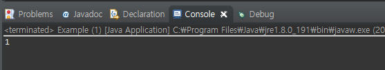
結果は「json」タイプで「String」を「Node」クラスで変換をしました。その意味は「Gson」ライブラリがちゃんと動いてる状況ですね。「eclipse」から「maven」を通ってライブラリをちゃんとアップデータしてソース上で使えることを確認できます。
ここまでJavaのオープンライブラリを参照する方法(eclipseからmavenを連結)に関する説明でした。
ご不明なところや間違いところがあればコメントしてください。
- [Java] Web spring frameworkのJSPで使う言語 JSTL - XML2019/10/03 20:02:06
- [Java] 39. Spring Web Frameworkを利用してウェブサービスプロジェクトを作成する方法2019/10/02 21:00:22
- [Java] 38. Javaでウェブサービスプロジェクト(JSP Servlet)を作成する方法2019/10/01 21:48:08
- [Java] 37.イクリプス(eclipse)でトムキャット(tomcat)を設定する方法2019/09/30 22:19:34
- [Java] 36.コーディングする時、よく使うコーディングパターンとステップ数を減らす方法2019/09/27 20:39:09
- [Java] 35. コーディング規約設定(Google Standard coding style)2019/09/26 21:31:25
- [Java] 34. WindowでMariaDBをインストールする方法2019/09/25 19:58:30
- [Java] 33. オープンライブラリを参照する方法(eclipseからmavenを連結)2019/09/24 19:35:54
- [Java] 32. Reflection機能を使う方法(Annotation編)2019/09/24 00:19:25
- [Java] 31. Reflection機能を使う方法(Variable編)2019/09/20 22:34:40
- [Java] 30. Reflection機能を使う方法(Method編)2019/09/19 20:20:10
- [Java] 29. Reflection機能を使う方法(Class編)2019/09/18 20:02:14
- [Java] 28. 文字タイプ(CharacterSet)とエンディアン(endian)で変換する方法2019/09/17 20:22:02
- [Java] 27. ネットワーク通信(Socket)をする方法2019/09/16 23:42:46
- [Java] 26. ファイル(IO)を扱う方法(ファイル作成、ファイル修正、アクセス日付変更とIOをclose(リソース返却)する理由、Closableインタフェース)2019/09/13 20:03:58
- [Tools] Dbeaver(無料Sql queryブラウザツール)2021/04/28 18:26:49
- [Bootstrap] HTMLデザインのフレームワークのBootstrap紹介2020/07/30 19:06:36
- [Python] メール(smtplib)を送信する方法2020/07/27 18:38:43
- [Python] HttpConnection(requestsモジュール)でウェブサーバーで接続する方法2020/07/20 14:41:51
- [Python] Excel(openpyxl)を扱う方法2020/07/16 16:40:31
- [Python] ファイル圧縮、解凍(zipfile)する方法2020/07/14 19:14:22
- [Python] Apache cgiでPythonを使う方法2020/07/09 19:58:19
- [Python] Web serverを起動する方法(http.server)2020/07/09 00:13:13
- [Python] WebSocketを使う方法2020/07/07 17:29:18
- [Python] PythonとJavaのソケット通信する方法2020/07/03 18:35:50
- [Python] PythonとC#のソケット通信2020/07/01 19:28:22
- [Python] INI(環境設定ファイル)を扱う方法2020/06/30 18:26:01
- [Python] Jsonを扱う方法2020/06/29 19:18:15
- [Python] XMLファイルを扱う方法2020/06/26 19:18:14
- [Python] IOを利用してCSVファイルを扱う方法2020/06/25 18:20:30